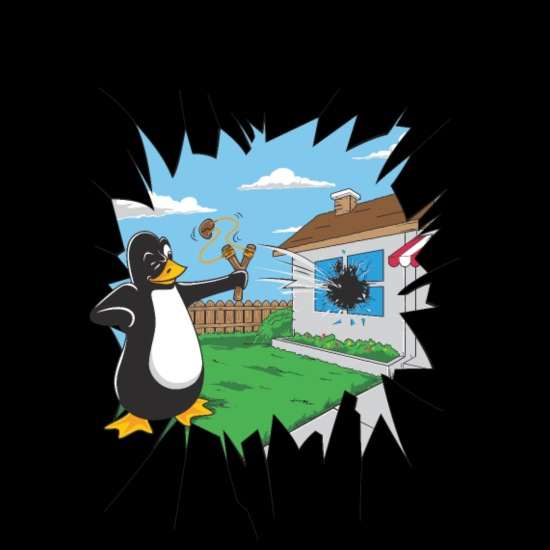

Informacje o systemie Linux Ubuntu
1. Co to jest Ubuntu i czym różni się od Windows’a?
 Ubuntu to dystrybucja systemu Linux, wyróżniająca się przede wszystkim otwartością, niezawodnością i przyjaznością dla początkującego użytkownika. Podobnie jak Windows, jest przestrzenią programową dla komputera, wewnątrz której uruchamiane są inne aplikacje.
Podstawową różnicą pomiędzy Ubuntu a Windows jest to, że ten pierwszy jest otwartoźródłowy i darmowy. Aby z niego korzystać nie trzeba wydawać żadnych pieniędzy. Jest też otwarty, więc można go używać właściwie bez większych ograniczeń.
Linux nie jest i pewnie nigdy nie będzie tak popularny jak Windows czy macOS. Mimo wszystko, może być dla nich alternatywą, która sprawdzi się zarówno w środowisku biurowym, jak i domowym. Na szczególną uwagę zasługuje tutaj Ubuntu – wygodna, przejrzysta i naprawdę funkcjonalna dystrybucja systemu operacyjnego Linux. Pełna gotowość do działania zaraz po zakończeniu instalacji, przejrzysty interfejs zapewniający intuicyjną obsługę czy stosunkowo niskie wymagania sprzętowe to jedne z największych zalet systemu. Na ich liście na pewno powinny też znaleźć się takie cechy jak:
- bezproblemowe aktualizacje
- wysoki poziom bezpieczeństwa
- stabilność
- szybkość działania
Co ważne, żadna z tych cech nie ulega pogorszeniu pomimo upływu czasu w trakcie użytkowania. Oczywiście numerem jeden dla wielu będzie fakt, że jest to rozwiązanie darmowe.
Nie ma róży bez kolców i tak też Ubuntu ma swoje wady. Są one takie same, jak w przypadku innych linuksowych dystrybucji. Głównym utrudnieniem jest katalog aplikacji mocno ograniczony względem tego, z czym mamy do czynienia w systemie Windows. Problemem jest przede wszystkim brak kompatybilności z niektórymi programami specjalistycznymi oraz grami.